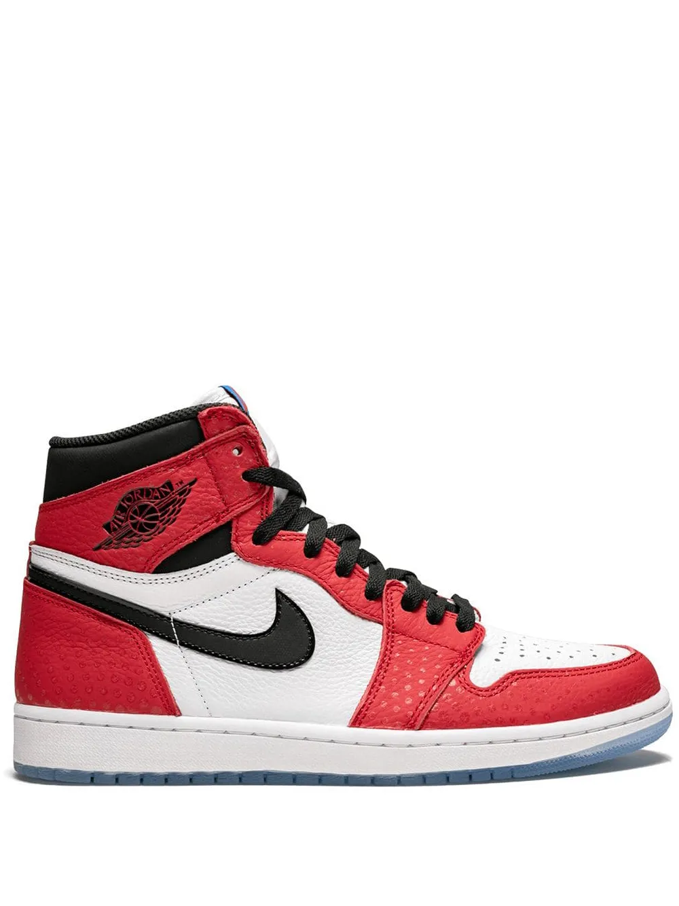

História do Air Jordan 1 :
O Air Jordan 1 foi lançado em 1985 pela Nike e é o primeiro modelo da linha de tênis assinada por Michael Jordan, uma das maiores lendas do basquete. Criado pelo designer Peter Moore, o tênis foi revolucionário para a época, tanto no estilo quanto no impacto cultural.
Inicialmente, o modelo causou polêmica por fugir das cores tradicionais da NBA. A versão "Bred" (preta e vermelha) foi até proibida pela liga, o que a Nike usou como estratégia de marketing, alegando que Jordan era multado toda vez que usava o tênis – algo que aumentou ainda mais a curiosidade e o desejo do público.
Com o sucesso do Air Jordan 1, a Nike consolidou a linha Air Jordan, que se tornaria uma das mais icônicas do mundo, influenciando o esporte, a moda e a cultura urbana.